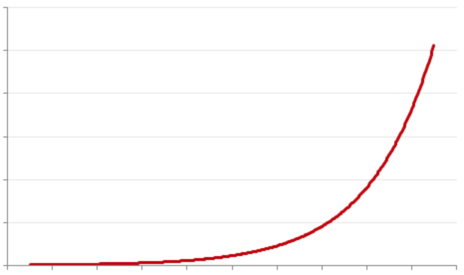
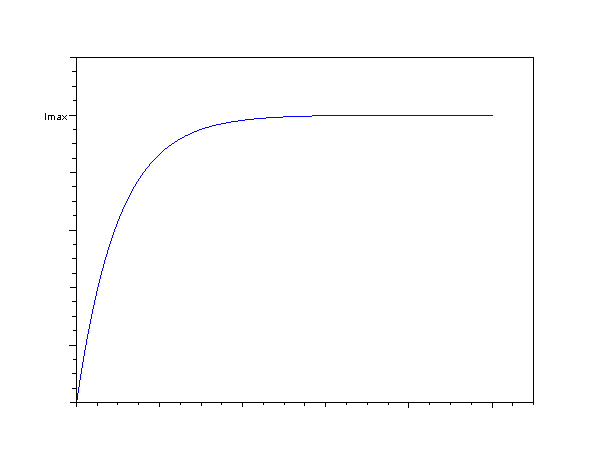

有六件，分别是：跑步（健身）、拉琴、看知识类视频材料（纪录片、TED Talk或上Coursera）、练习德语、练习日语、练习英语。迄今为止，各自坚持的时间分别是：十年、八年、五年、四年、四年和七年。
这六件事情加在一起每天会占据我三半小时时间，但如果每天没有特别紧急的事情（临近一些截止日期）或者一些特殊计划（如出游、参加活动之类）都会尽力保持。
很多人会问我一天哪来这么多时间做这些事情，其实这些事情都是拆散融合进其他事情之中的，真的做下来其实没有花很多额外的时间，我一天一般是这样安排这些事情的：
早上吃完饭后会例行的困倦（可能是碳水摄入过多导致头脑血清素增加，但就算不吃碳水也会困），这个时候反正也是做不了什么事情，于是听读和复述一段英语材料（30分钟）。听读结束之后就清醒很多了，于是可以投入工作。
中午吃饭时看知识类视频材料，因为是知识类的视频，很多时候也不用一直盯着画面，听背景音跟上思路就好（30分钟）
中午吃完饭后听读和复述一段德语材料后午睡（30分钟）。
下午经过一天工作后精神状态不好的时候跑步健身（40分钟上下），清空大脑和恢复精力。
晚饭后拉40分钟上下的琴。
临睡前听读和复述一段日语材料（30分钟）。
总计三小时二十分钟。
昨天的TimeLogger部分时间计时截图（午睡和两两顿饭的计时超时忘记摁掉所以出现了很大偏差，多出来的时间是在工作）：
如果把这些事情拆散并分配进一些无关系紧要的时间中（比如头脑昏沉的时候通过跑步或口语提神，不需要和别人一起吃饭时看纪录片），这样一天下来就算做完这些事情，工作的时间也能保证七个小时上下，并没有很多人想象中那么占时间。
但不管每天花多少时间，这些事情都有一个共同的需要——坚持。
指数型技能和对数型技能：
我爷爷是音乐老师，我在小时候他就不断对我说“琴不离手，曲不离口”。在小时候我开始隐约体会到了有些技能是需要持续不断的投入才能保持水平的，比如上述六件事都是如此，一旦开始了就不想浪费掉，于是一直每天或多或少都花时间保持着。
后来我看到了更加准确对这个问题的描述，就是指数型技能和对数型技能。
这个概念是纽约时报专栏作家David Brooks提出的，而他也是受到了在Coursera上一年学完MIT 33门课程的Scott H Young在2013年写的一篇博客文章“Two Type of Growth”（两种增长方式）启发，在 2014六月14日年纽约时报的专栏文章里专门阐述了这个概念，文章名字是：“The structures of Growth: Learning is no easy task” (增长的结构：学习可不是简单的任务)
David Brooks认为学习曲线分两种：指数型和对数型
指数型技能一开始进步很慢，但到了一定台阶会突然豁然开朗。比如很多科研工作便是如此，先要经过大量看似无用的基础知识学习，到了一定境界才会豁然开朗，突然间对整个学科的脉络和系统有了深入体会，从而选择研究方向。这样的技能增长曲线就跟指数曲线一样。
而对数型技能则刚好相反，一开始学习进步会神速，但到了一定瓶颈后则是极难突破。比如上述我每天都坚持做的事情都是如此：语言上可以快速入门简单学会一些日常词汇和专有套路，很快就就可以在固定的语境下对答如流。但是学过语言的都知道要达到谈笑风声的水平是何其不容易。体育也是如此，普通人经过简单的训练则可以达到专业运动员可能70%上下的水平，而最后的30%则可能需要翻甚至十倍的时间才能的得到。David Brooks用了泰格伍兹成名后还坚持练习来阐述对数型技能。钢琴家帕德雷夫斯基也曾说：“若我一天不练琴，只有我自己知道：若我两天不练琴，评论家们就会知道：若我三天不练琴，听众就会知道。”
因此对数型技能，必须具备“坚持”的特质才不会丢。
技能与技艺
虽然David Brooks清晰地阐述了两种学习曲线和对应的特性，但David Brooks把学习严格分为指数型和对数型，这样简单的二分法我其实是拒绝的。
我认为更清晰的定位是：技能（Skill）是对数型增长，而技艺（Art）则是指数型增长。
就算是所谓的指数型科研工作，你也可以快速掌握现有研究人员的讨论，迅速拼凑出一篇论文来发表。但这时你掌握的是技能（Skill），虽然入门时间很短，但却可以有很大产出。但是做过研究的人都知道，两篇看似差不多的文章，可能后者就比前者在分析上提出了一个更有价值的问题和研究方向。后者文章的价值可能和前者就是数量级上的差距，而后者作者的研究水平和收入也可能和前者是数量级上的差距，这就是指数增长，因为后者的那点点差距，也许就来自于好几年甚至几十年的积累，他掌握的是技艺（Art）。而这一点点微小的差距，足够让后者得到甩开前者好几个数量级上的回报。
这种现象小到个体大到组织我们都能找到一些影子。
个体上我们看到同一项技能，有资质的老师傅的身价会是年轻学徒的好几个数量级。美国历史上最伟大的最高法院大法官之一 Oliver Wendell Holmes 曾说："The young man knows the rules, but the old man knows the exceptions." （年轻人知道套路，而老年人知道凡事有哪些例外）。老师傅正式因为知道这些例外，看上去在对数曲线上只比年轻学徒高那么一点点，但是收入却是年轻学徒的好几个数量级的指数差距。
公司层面我也可以看到“三四定律”，稳定的市场里一半主要只剩下三家竞争者，市场的上占有率排第一的公司可能只比排第二的公司好那么一点点，但是却可以拿走第二名一倍的收入，第二名也可能只是比第三名好那么一点点，而第二名可以拿走第三名一倍的收入。而第一名的收入则是第三名的四倍，尽管他们在水平上也许只差那么一点点。
不少一流的名校也有“务虚”的特质。茱莉亚音乐学院的并不会让学生花上所有时间去练琴，相反会要求他们学习大量音乐史、历史、文学、语言和其他乐器，让他们深入到作品的创作背景中，全方位还原历史背景、语境、作者心态以体会作品想表达意思，这样的音乐才有感染力。耶鲁校长理查德·莱文（Richard Charles Levin）也说过一句名言：如果一个学生从耶鲁大学毕业后，居然拥有了某种很专业的知识和技能，这是耶鲁教育最大的失败。本质上他们是希望学生以后能掌握技艺（Art）获得指数型回报，而不是简单地技能（Skill）获得对数型回报。
技能的特点是重复性，因此只要学会套路就很容易做出还不坏的结果。而技艺的特点则是在重复性的基础上，加上针对特定场景或环境的再加工或者艺术性创造。比如翻译工作从简单的准确无误转译意义，到“信达雅”，甚至“谈笑风生”。或者做到 Oliver Wendell Holmes 所说的“ knows the exceptions”。
随着人工智能和机器人的崛起，越来越多重复性的工作将会被替代。其实掌握技能的人其实一直都在不断被淘汰，这个进程在人类历史上一直在进行，只是经过一次工业革命就会加速一次，单纯掌握了技能的人会不太碰巧地持续贬值，碰上科技革命或工业革命则会加速贬值。而掌握了技艺的人则会持续增值，如果在拥有技艺的前提下开放心态学习并不断精进，则会加速增值。
应该掌握技能还是技艺？
掌握技艺是我们的最终目标，但没有技能，休谈技艺。
我认为无论各行各业，都没有指数型对数型之分，只有掌握了技能和技艺之分。如果认为选了一个指数型增长的行业于是就可以高枕无忧，不需要辛苦坚持刻意练习无非是自欺欺人。各行各业都需要经过长期的联系掌握技能后，加上自己对技能理解和不懈的思考，才能掌握技艺。
而我每天都坚持做的这六件事情，则是为了让我在专业领域掌握技艺。
我的本职工作是研究可持续发展和新能源电力系统，但这个系统涉及太多方面的因素权衡，我必须保持持续的开放和好奇，从各个不同的领域汲取观点和思想才能推动这个复杂系统的变革。
每天花时间看纪录片，TED Talk和Coursera是为了获得开放的思想和接触更多观点，很多新的思想和观点和我的专业知识都会产生融合和奇妙的化学反应，每天只要花上30分钟就可以达到这个效果，不要太超值。（以前曾经写过一个推荐纪录片的回答，最近在Coursera上上课没怎么更新了，惭愧惭愧：有哪些比较好看的纪录片？ - 知乎）。
每天坚持跑步则是因为跑步是可以清空大脑，最适合每天输入大量信息之后头晕脑胀的时候做。很多灵感和观点也是在慢跑过程中突然出现的。之后没有竞技长跑的压力完全改成了懒散慢速的长距离慢跑，可以边爬变思考，让跑步完全为思考服务（以前写过的有关慢跑的回答：每天坚持跑步，或者慢跑真正带给你了什么？ - 知乎）
而英语、德语、日语则是结合了专业需要和自身条件的考量。英语不用赘述，不通过英文就接触不到最前沿的研究和观点，无法和很多人交流。而日德两国同为二战战败国，在资源利用效率和科技水平上都达到了极高水准。做新能源和工程基本是绕不开日德的，加上德语和英语同属日耳曼语族，有英语条件可以门槛低一些。日语和中文也是同源的，中国人学日语天生就自带优势，加上以前爱看动漫有一定口语底子。所以选择这两门二外坚持下去其实也不是死磕的结果。
而小提琴则是完全为了自己喜欢和娱乐用，并没有什么功利色彩。小时候3岁时曾经被逼学琴，但那时候不懂事也真不喜欢就闹别扭没学了。后来中考之前被乐团的朋友拉去看他的演出，从此一发不可收拾地爱上古典乐，于是开始拉小提琴直到今天。拉琴虽说完全为了娱乐，但因为弦乐器要求极为敏感的音准感觉，所以应该也对开阔思维有所帮助。而学了工程之后发现头晕脑胀的时候，听巴赫无伴奏小提琴组曲是一种可以整理思路又缓解焦躁的方法，所以如果抬杠的话，音乐也是多少有些帮助，但主要还是因为有趣和喜欢。
虽然技艺的回报和技能的差距是指数级别的，但所需的投入时间也是指数级别的差距。
每天坚持练习的这些技能，我只是坚持每天都花一点时间而已，并没有花很多时间去做。因为让他们停留在技能（Skill）层面就好了，我的本职工作是新能源电力系统，让本职工作提升到技艺（Art）水平才是我的目标。所以我德语虽然三年前拿了歌德A2现在也还只停留在简单交流阶段，但却可以让我接触到很多德国的工程人员和技术组织，这让我的本职工作有了数量级上的飞跃。而日语则是停留在坐日航不会被人认成外国人的水准上，但通过日语去了解日本的各方面技术和社会都有了全新的视角，甚至反过来审视中文都有了很大不同的理解，这些也都是数量级上的差距。
坚持这些事情的理由只有两个：有趣、有用、或两者兼备。虽然看上去这些坚持做的事情都是最后都会处于一种高不成低不就的水平，但我也不在乎，也会一直坚持。因为本质上我和这些专业的专业人员并不在一个游戏和一条鄙视链上，这些事情只要能让我觉得生活丰富开心或者额外能和我的本职工作产生一点化学反应。那么这样的坚持我就会一直持续下去。而我的专业领域要从技能过渡到技艺，很大一定程度上还要依赖于这些看似无关紧要的事情，正所谓“无用之用，是为大用”。
我并不提倡单纯地追求“每年打卡读100本书”、“降维攻击”和“斜杠青年”，如果一不能有用，二你自己也不能开心，只是为了解锁一些技能而解锁一些技能，那么最终你会发现一切都是瞎忙。你只能在有用和有趣之间选择其一或者两者结合，选择一件事情才有机会坚持持续地做下去，并对你产生指数型的正面影响。
而大家在坚持锻炼技能时也不必太过死板，既然最终目标是有趣和有用，在执行上可以只是预留这块时间出来，而执行内容上做出宽松调整。比如今天我想看日剧，那么日语就不练了，但看日剧时尽量做到不要看字幕，或者不看中文字幕，并跟读对话。或者有段时间想读书，就把看知识性视频的时间替换掉，每天阅读30分钟课外书，直到看完想看的书又切换回去。
祝大家都能在坚持中，找到有用、有趣的生活和自己。